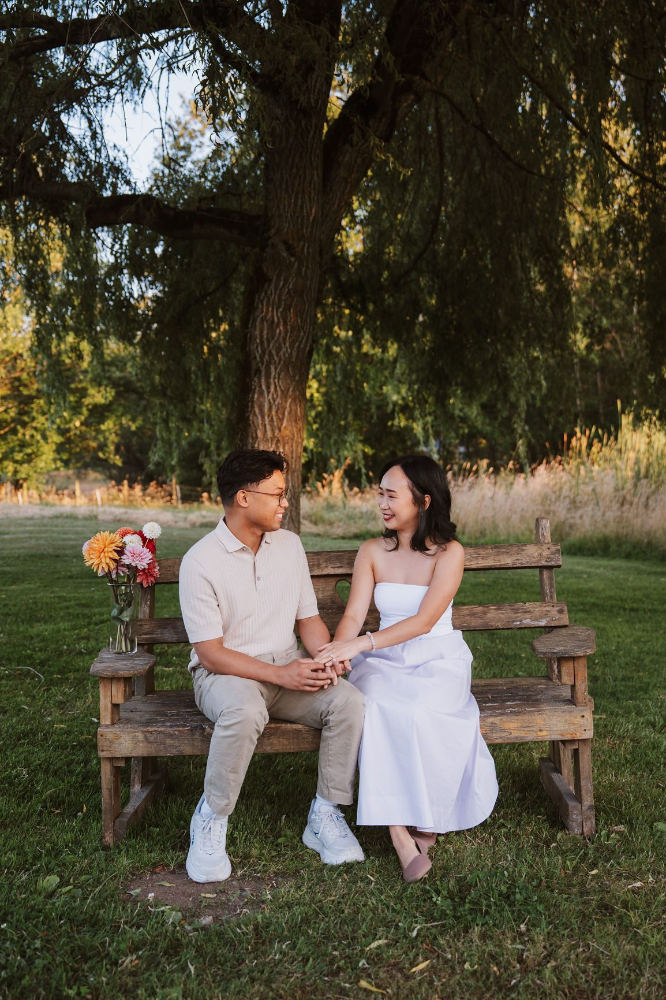

Every couple asks us the same question about a week before their session. What should we wear?
The advice you find online is mostly about what photographs well today. That is the wrong timeframe. These photos are going on a wall, into a save the date, into a slideshow your parents will play at the reception, and eventually into a box your kids open. The real test is whether you will still like them in five years.
So here is the version we actually give our couples, and it is shorter than you think.
Look at a photo of yourself from 2021. What dates it? Almost never the person. It is the specific thing. The exact shade of dusty sage that was everywhere for eighteen months. The chunky sneaker. The statement sleeve. The cut of jean that has since moved two inches.
Trends do not age badly because they are ugly. They age badly because they are precise. They point at a year. A plain cream sweater points at nothing, which is why it still works.
The filter for every piece is one question. Would I have worn this five years ago, and would I wear it five years from now? If both are yes, pack it.
Being blunt saves you a shopping trip.
Texture over pattern. Knit, linen, suede, wool, raw denim, anything with a weave you can see. Texture gives a photo depth without dating it, and West Coast light loves it.
Movement over structure. A skirt or a dress with weight and length will do half the work in any frame where you are walking, turning, or standing in wind, which on this coast is most of them. Stiff bodycon holds still and photographs stiff.
Fit over price. A forty dollar sweater that fits your shoulders beats a three hundred dollar one that does not. Nobody can tell what anything cost. Everybody can see a sleeve that is too long.
Here is the practical method. Pick two or three colours between you and let each person wear a different amount of each.
Say your palette is cream, warm tan, and a deep slate. One of you leans cream with a tan jacket. The other leans slate with a cream layer underneath. You are clearly together. You are not wearing a uniform.
The one rule we hold firm on is contrast against the background. Vancouver gives us a lot of green and a lot of grey. Olive on a forest trail disappears. Charcoal against a wet November seawall disappears. Cream, camel, rust, warm white and dusty blue separate from this landscape beautifully. Check your outfit against the place, not against a mood board.
Couples show up with four looks and a garment bag and we spend a third of the session in a parking lot.
Two is the number. One relaxed and soft, jeans and knitwear, the version of you on a Sunday. One elevated, a dress and a jacket, the version of you at a nice dinner. That gives the gallery real range and costs you one change.
If there is a third thing you love, wear it on top of outfit one. A coat, a blazer, a scarf. Layers read as a whole new look in the gallery and take four seconds instead of fifteen minutes.

Shoes. You will walk further than you expect. Our favourite locations involve gravel, roots, rock and a bit of a climb. Bring the good shoes for standing frames and something real for the walking. Bare feet on sand is fine and always has been.
Hems. Long is lovely and long gets wet. If you want the ocean frames, accept that the bottom fifteen centimetres of that dress is going in the water, and pick a fabric that forgives it.
Undergarments. Check every outfit in daylight in a mirror before the day. Straps and lines are the single most common thing couples flag in a gallery, and they are the one thing we cannot fix afterward.
Hands. The ring is in more frames than anything else you own. Get the nails done or do not, but decide on purpose.
Iron it. Wrinkles in a folded back seat are real and they show. Hang everything the night before.
This is the part that matters more than any of the above.
We photograph a lot of couples who would tell you they are not photo people. The fastest way to look stiff is to be wearing something unfamiliar. You fidget with it. You check it. You hold your arms away from your body. The camera sees all of it.
The jacket you wear every week already knows how you move. Put it on, forget about it, and go be with each other. That is the whole trick, and it is why the photos of couples in their own clothes always beat the photos of couples in a costume.
Five years from now you will not remember what was in style the season you got engaged. You will remember that you looked like yourselves.
SimplyWed Studio shoots engagement sessions across Vancouver, the North Shore and the Sea to Sky. Send us your outfits ahead of time and we will tell you honestly which two to bring, and which location suits them. Get in touch and we will sort it out before you shop.
← Back to the journal